COWBOY COOTS
An action-adventure bullet-hell built for the Ludwig Game Jam 2023, winning 1st Place Visuals out of 250 entries as a 2-person team. Coots gets trapped in an alternate Wild West dimension after some museum mischief goes sideways — players dodge and weave through a three-stage onslaught of encounters to reunite with Ludwig. Fast-paced top-down action with a Reflex time-slowdown mechanic, pixel art visuals, and a full original soundtrack.
Corvin Erdos: game design, programming, dialogue engine, 2D-to-3D art integration, QA · Benjamin Brown: art, UI, sound, music, concept, scripting · Ellis Brown: additional music
// KEY_RESPONSIBILITIES
Sole programmer on the project in UE5. Built the WASD movement system, the Reflex mechanic — a time-slowdown ability triggered by spacebar for precision dodging — the three-stage encounter loop, and a DataTable-driven dialogue engine. Integrated the 2D art into the 3D Unreal Engine scenes. Also handled QA across the full build, catching edge cases under the jam's compressed timeline.
Wrote every bullet pattern, synced to the music's BPM, and designed the three-stage difficulty curve. Built the cutscenes in Level Sequencer from Ben's animations.
// DESIGN_NOTES
BULLET PATTERNS WRITTEN AS DATA, SYNCED TO THE BEAT
I wrote every bullet pattern as data and synced it to the BPM of the music, so each encounter plays like a song. The side an attack comes from is always the same in the sequence, but where along that side it spawns is randomized each run. Players can learn the rhythm of a stage without memorizing exact positions.
Two classes split the job. The bullet controller owns timing: it runs the timer, stays on the beat, and steps through the sequence. The bullet generator owns placement: where each bullet spawns, which way it travels, and how fast. Each beat in the sequence is one entry, like "Up+Up+Up" for a volley from the top, "Right*+Right*" where the asterisk marks a stronger bullet, or an empty entry for a rest, and the controller calls the matching generator function by name.
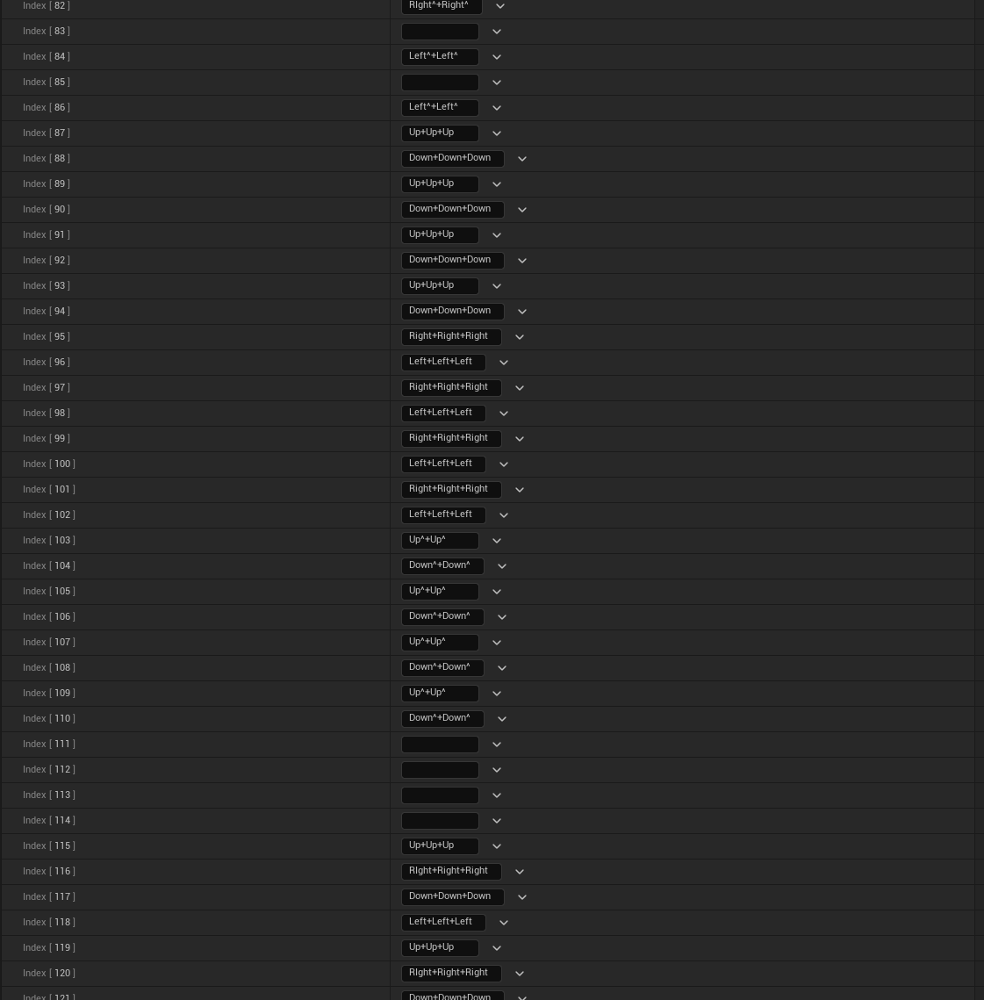
ONE-BEAT TELEGRAPHS
Every bullet gets a warning exactly one beat before it fires. Tying the telegraph to the beat instead of a fixed time meant that when the tempo rose, the warnings sped up with it, so the game stays readable as it gets harder.
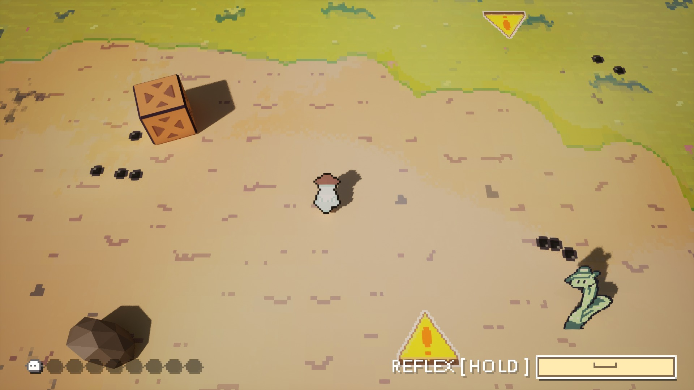
REFLEX: SLOW THE BULLETS, NOT THE PLAYER
Holding Reflex sets global time dilation to 0.5, slows the music, and raises Coots' walk speed to make up for it, so the world slows down while Coots keeps moving at full speed. A meter drains while Reflex is held; when it empties, Reflex cancels and goes on cooldown. It turns a panicked moment into a precise dodge.
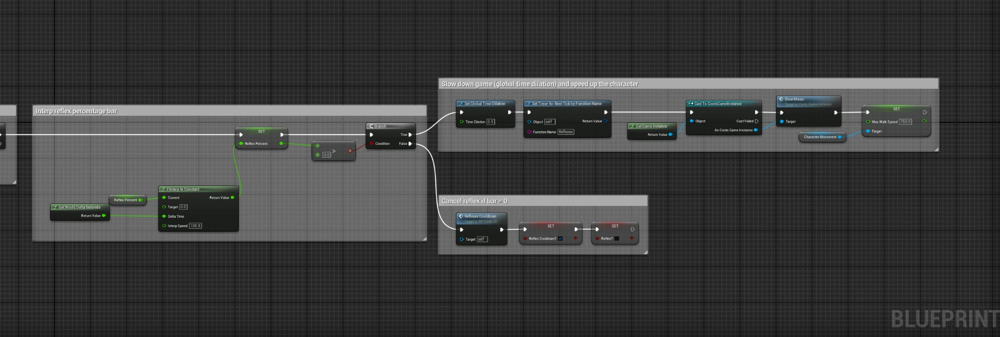
THREE STAGES OF ESCALATION
Each stage raises the BPM, adds stronger bullets that deal more damage, and introduces volleys from multiple directions at once. Because patterns and warnings are both tied to the beat, raising the tempo raises the difficulty without breaking the telegraphs.
DIALOGUE ENGINE
Dialogue lives in a DataTable, so lines can be written and reordered without touching the Blueprint logic. Each line shows with its speaker's portrait and types out at a set text speed. Pressing interact mid-line finishes it instantly; pressing again loads the next line, and after the last one the widget removes itself and tells the engine the conversation is finished.
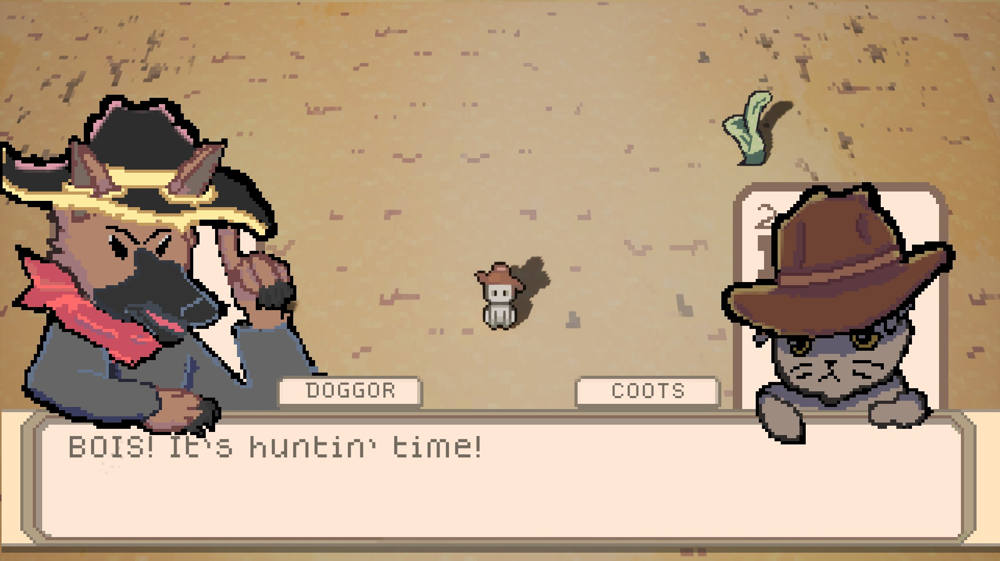
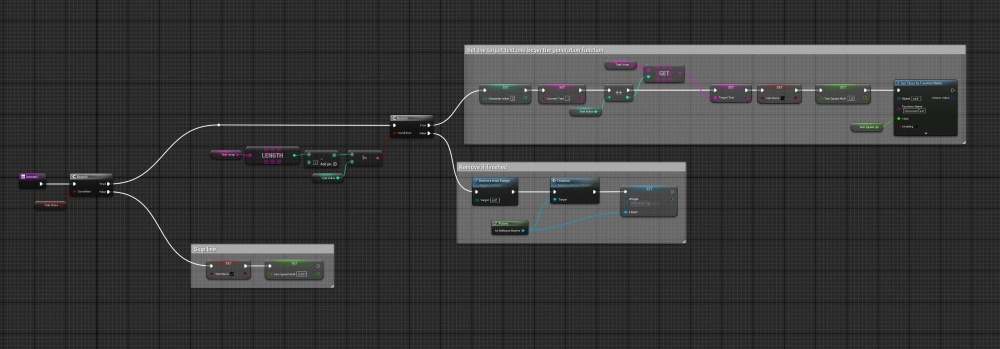
2D ART IN A 3D WORLD
All of the 2D art runs through Paper2D and PaperZD in a 3D Unreal scene. The camera angle is fixed, and the sprite materials are lit with shadows enabled, so the pixel art sits in real light next to 3D props.
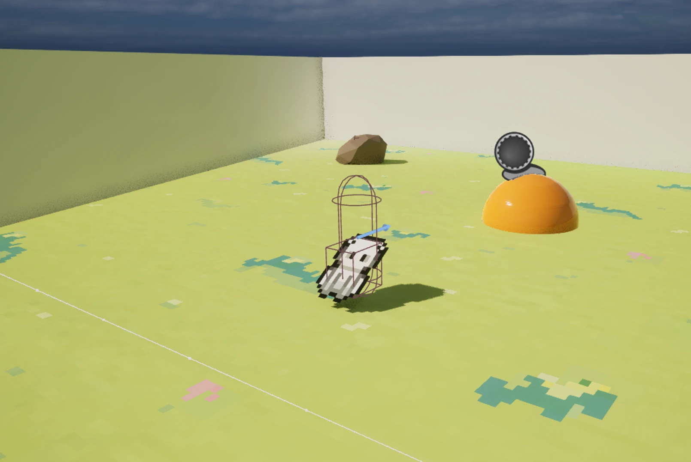
CINEMATICS
I built the cutscenes in Unreal's Level Sequencer, putting together Ben's animations and staging the shots.
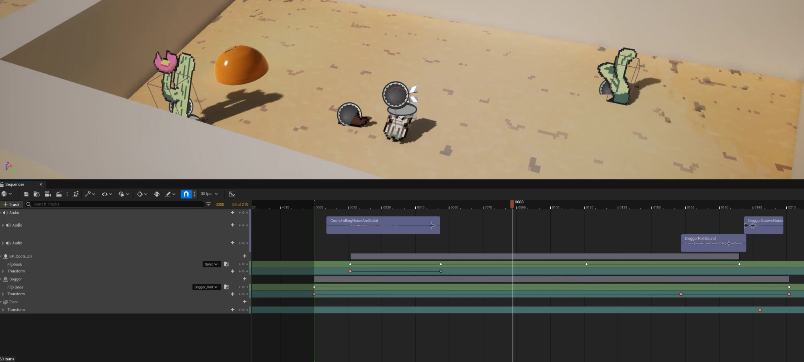
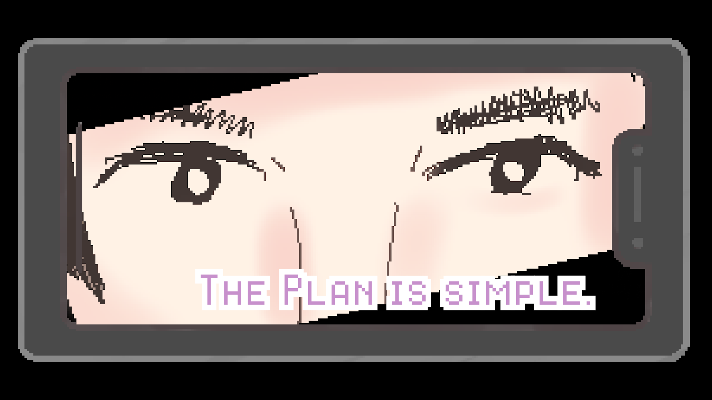
WHAT I'D DO DIFFERENTLY NOW
The bullets were timed on tick, so on slower machines the patterns drifted out of sync with the music. Scaling by delta time is an easy fix. More broadly, we made the game in a couple of days, so a lot of the logic ran on tick and never got optimized. I now build classes optimized from the start instead of planning to clean them up later.
// SCREENSHOT_LOG

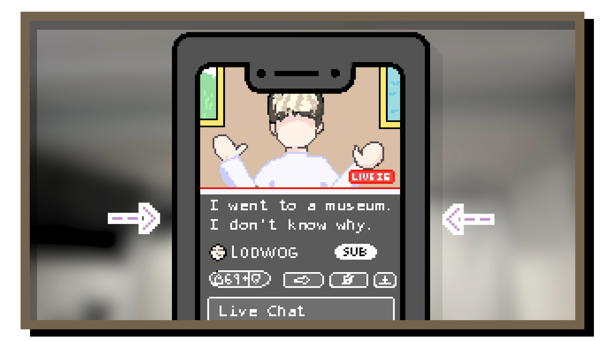
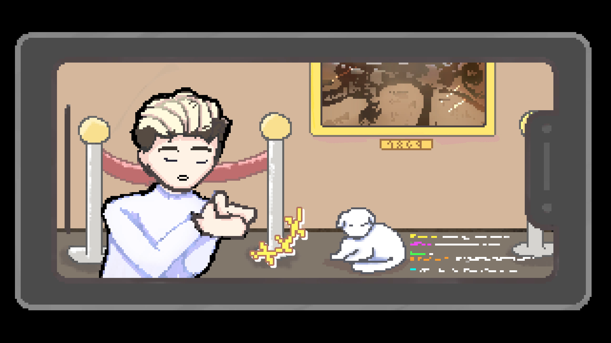
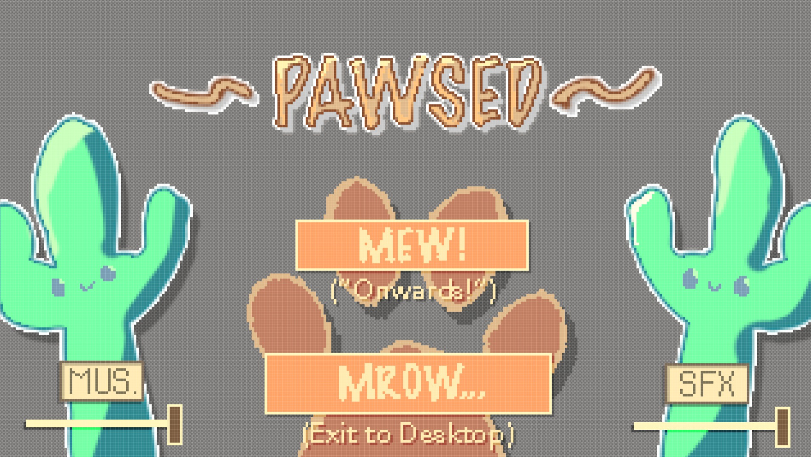
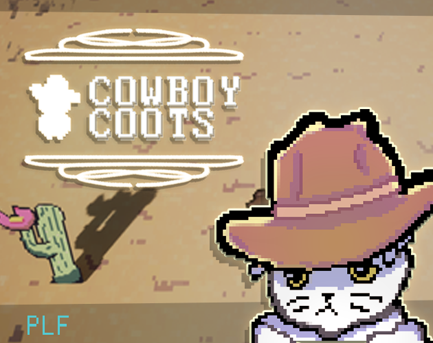